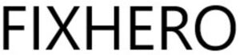

Trade Mark Journal No.2025/047 21 November 2025
WO0000001884575 (1,16,17)
Office of origin: France
Date of International Registration:18 September 2025
Date of designation in the UK:
18 September 2025

International priority date claimed: 12 May 2025
(France)
(5146802)
- Class 1
- Adhesives for finishing and priming; glues for industrial use; glues, other than for stationery or household use; gums [adhesives] for industrial use; glue-based preparations; adhesive preparations for industrial use; adhesives for industrial use; natural adhesives for industrial use; leather glues; adhesives for screens; adhesives for plaster; waterproofing adhesives; wallpaper adhesives; separating and unsticking [ungluing] products; solvents for removing gum other than for household use; degumming products; silicones; all the above-mentioned goods exclusively used in manufacturing adhesives.
- Class 16
- Adhesives for stationery or household purposes; starch paste [adhesive] for stationery or household purposes; glues and other adhesives for stationery or household purposes; transfers (decalcomanias); stickers [stationery]; adhesive tapes for stationery or household purposes; self-adhesive tapes for stationery or household purposes; adhesive bands for stationery or household purposes; gum arabic [glue] for paper or household use; gummed cloth for stationery purposes; washi [Japanese paper]; glues for office use; adhesives for stationery or DIY; adhesives for household use; adhesives for paper and household use.
- Class 17
- Weatherstripping compositions; caulking and insulating materials; sealant compounds for joints; adhesive tapes for use in manufacture; adhesive bands other than stationery and not for medical or household purposes; self-adhesive tapes, other than stationery and not for medical or household purposes; duct tapes; insulating tapes; raw or semi-worked rubber; gutta-percha; caulking materials; weatherstripping; insulators; water-tight rings.
CHRYSO Italia S.r.l
Representative: NOVAGRAAF FRANCE, 2, rue Sarah Bernhardt, CS 90017, 92665 Asnières-sur-Seine Cedex, FRANCE